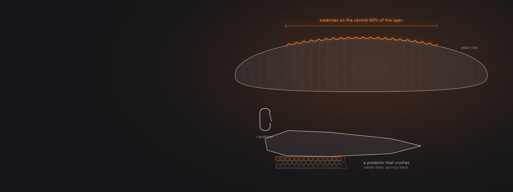
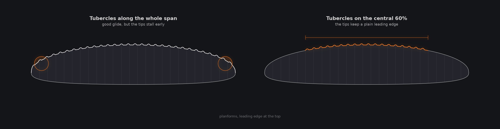
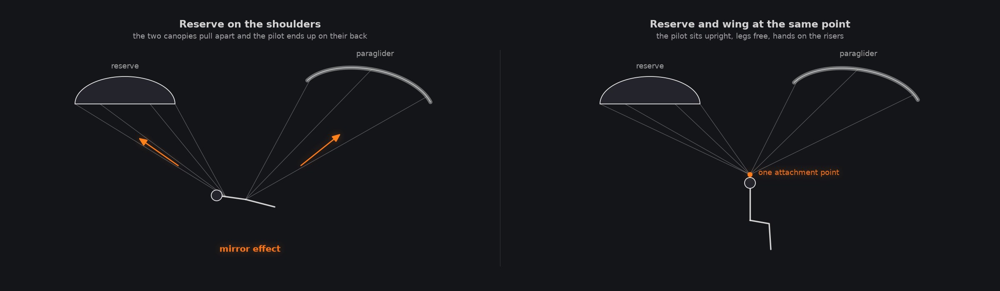
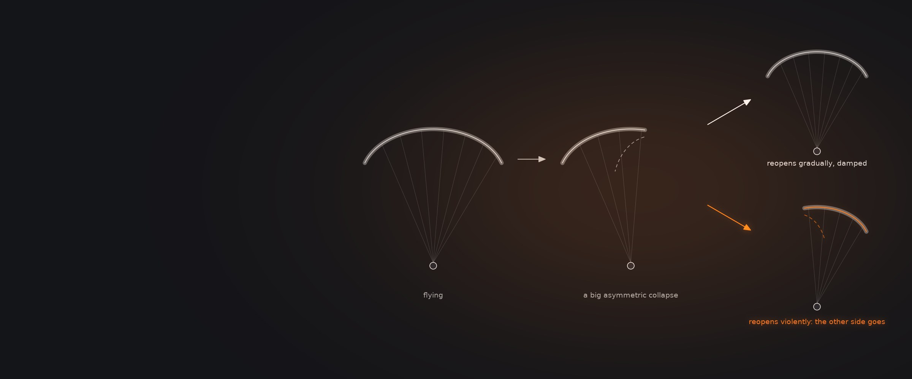

How Are Paragliders and Harnesses Designed and Made?
What happens between an idea and the gear you clip into: where it is sewn, how it is researched and tested, what a designer does about the moment it goes wrong, and what the racing world asks of the brands.
Four conversations. The designer who built Gin Gliders around one competition wing, the founder of Neo on making harnesses in France, Pal Takats on safety culture in racing, and the president of the Paragliding World Cup Association.
The four conversations
Open any tile for chapters, quotes and links Pal Takats on Challenges, Change & The Future of Paragliding 10 chapters
Episode 5157 min
Pal Takats on Challenges, Change & The Future of Paragliding 10 chapters
Episode 5157 min
 Brand StoriesEric Roussel12 chapters
Episode 1197 min
Brand StoriesEric Roussel12 chapters
Episode 1197 min PWCAGoran Dimiskovski13 chapters
PWCAGoran Dimiskovski13 chapters
Brands that started with a pilot and a problem
Gin Gliders began with a competition wing drawn during what was meant to be a break, and Neo with a harness modelled on a climbing one. Both founders passed through Edel in Korea, and Eric Roussel later worked for Gin.
Gin Seok Song has flown since 1977, first on basic Rogallo hang gliders that took off and landed a minute later. When paragliding arrived he pushed it in Korea, because it suited a small country with few places to land and many power lines; he ran a big school and worked with local government to open new sites. He designed wings for Edel, and when he left in 1997 he meant to take a break. Someone asked for competition wings, so he drew them, had a small factory sew them and sent them to Japan. When Japanese pilots started reaching World Cup podiums, he asked them not to say who had designed the wing and to call it the Boomerang. Top pilots soon worked out where it came from and came to see him, and he built a small company around that one model: Gin Gliders.
Eric Roussel started in the industry at 19 as a trainee, a stint that took him to Edel in Korea, joined Gin Gliders when it was created and was Gin's distributor in France. His own brand began with one harness. On a climbing trip he compared a friend's harness, which had to be stepped into like trousers, with his own bouldering harness, which opened around the legs. The result was the String, a paragliding harness whose leg strap closes straight into the carabiner. Friends bought it and asked why he did not start a brand, so he put his small savings into it; friends added a little money, and there has never been a big investor. His first rule for anyone who wants to make gear: fly, and love flying. People who come in for ego, or expecting a big business, are in the wrong place, he says.
Sewing in France, and paying for a fabric
Neo designs and sews its harnesses and rucksacks in its own French workshop, which means charging more to pay the people at the machines. Gin Seok Song paid a Korean mill to develop the fabric he wanted.
Eric Roussel sets out the arithmetic. With all charges included, a sewing wage in France costs six to twelve times what it does in Vietnam, where many of the outdoor industry's rucksacks are made. To pay it, Neo has to sell for 30 to 50 percent more and justify that with better materials and more innovation, much as a luxury maker does. He had set up and managed a factory in China in 2001, so the choice was deliberate: he considers it ethical to make gear where the sport is practised, and most of Neo's customers are in Germany, France and Switzerland. The company has about 30 people, around 40 sewing machines and a laser cutter, and a workshop of its own that it doubled in size last year. He wants it to grow in quality rather than numbers, and every year, he says, is still a fight to survive. The one product Neo does not make itself is its helmet, developed over two years with a specialist manufacturer.
Gin Seok Song's fabric story shows what a small brand can buy with patience. Paragliding cloth starts as the same nylon for everyone; what differs is the weave and the coating. Myeongjin, an old Korean company that made military parachute fabric, was willing to supply bottom surfaces and ribs but wary of top surfaces, where porosity matters most. Gin Gliders paid for the development and flew test wings, a school glider and a tandem, one in France and one in rough desert conditions, then checked their porosity and strength again. It took some years. In return Gin had the fabric to itself for two years, and he says many other brands now use it. He is just as plain that competition wings are not where Gin Gliders earns its living: the A, B and C wings are the main business.
Wind tunnels, whale fins and eighty harness shapes
Gin Seok Song moved from flying feedback to university research with government money, and found the tubercles only worked on part of the wing. Neo simulates shapes by computer and still spends hundreds of hours in the air on a harness.
For years Gin Seok Song designed from experience, which he says came from hang gliding before paragliding, and from the feedback of a large team of competition pilots. About ten years ago he decided that was no longer enough. The universities he approached understood aircraft but not slow wings like paragliders; he found one student, later a professor, who did. With about a million dollars of Korean government support they developed what Gin calls the wave leading edge, and a newer grant of about two million dollars over four years is going into wing shapes and tips. He treats CFD, the computer simulation of airflow, as a reference, and trusts wind tunnel tests in the university's tunnel for practical data.
The idea comes from the fins of whales, which carry bumps called tubercles. The first version put them along the whole leading edge: glide was good, but the wing spun early and the tips stalled quickly. The professor traced it to the curvature of a paraglider, which changes the flow compared with a straight fin, so the tubercles now run along the central 60 percent of the span and the tips keep a plain leading edge. Gin says the bumps delay the separation of the airflow behind the leading edge, which he credits with a much slower reaction after a big collapse. At Neo, Eric Roussel describes the same patience with a harness. For its lightweight competition pod harness, the team simulated more than 80 shapes on a computer, because 80 prototypes were unaffordable, but the geometry underneath, which he considers the foundation of any harness, took two to three hundred hours in the air to get right.

After Gin Seok Song, Episode 51, chapter 8. Schematic.
Designing for the moment it goes wrong
A wing has to be able to collapse, says Gin Seok Song; the design work goes into how it comes back. Eric Roussel applies the same thinking to protectors and reserves.
Gin Seok Song rejects the idea that the safest wing is one that never collapses. A paraglider needs to be able to collapse, he says, or it becomes more dangerous; what matters is what happens next. A slow, even reopening is manageable, while a sudden, impulsive one can fold the other side and end in a crash. Twenty years of work on internal structure and inlet shapes have made wings more damped, and he believes today's wings are both faster and safer and easier to fly than those of twenty or thirty years ago. He applied the same priority when he designed the Bonanza 3 for cross country: on a seven to nine hour flight in the Alps a pilot will cross the lee side a few times, so he aimed for stability rather than top speed. The Boomerang's early success, in his telling, came from the same place: a wing that is easy to handle at full speed is the one that performs.
Eric Roussel's choice of protector follows similar logic. Foam and airbags are elastic and give energy back; Koroyd's tubes absorb it by crushing, like a car's crumple zone, in 7 or 8 centimetres. Early tests showed a solid block crushed only 10 to 20 percent, so Neo uses blocks set in soft foam to keep them upright, with a rounded base for impacts that are not vertical. A thicker block would not help, he says, because the material works best when most of it crushes. Other guests on this site are more sceptical of crumple protectors, and his own advice is to replace one after a real impact, like a helmet. His stand-up reserve system came out of a conversation about the mirror effect: with the reserve bridled to the shoulders pulling one way and the wing on the main carabiners pulling the other, a pilot can end up on their back. Most pilots throw low, he says, often 100 to 150 metres above the ground, too low to recover the wing, so Neo joins the two at the same point and sits the pilot upright. He published the patent so that any manufacturer who asks can use it.

After Eric Roussel, Episode 23, chapter 12. Schematic.

A paraglider has to be able to collapse. One that never did would be more dangerous. What we work on is the reopening: slow and smooth, not a violent one that folds the other side.
Gin Seok Song, Gin Gliders Episode 51, paraphrased
One collapse, two reopenings. The damped one is what the design work is for.
Who decides how much risk is on offer
Pal Takats thinks rules are not enough without the culture to use them, and wants events and gliders rated for risk. Goran Dimiskovski, who leads the World Cup association, sees one real safety measure: the quality of the pilots.
Pal Takats started flying at 16, about 25 years ago. He agrees with the pilots who told him gliders are not the main problem: task setting and behaviour in the air are. In crowded gaggles, he says, some pilots commit to a turn without knowing where they will end up and force others to make room. He once did the meet director's job at a Superfinal, unofficially, and knows the pressure from pilots who have spent thousands on gear and travel and want to fly. His question for the sport is whether it wants to keep people happy or alive. He backs a concept, nearly ready in his account, to grade events from A to E, green to red, on infrastructure, medical cover and whether a helicopter can reach you, and would grade gliders the same way. He wants a pilot union, floats one standard glider for some events, as in some Olympic classes, and asks brands to consider dropping the last few percent of top speed, since a race will use all of it. When the first submarine harnesses arrived with compromises he disliked, a smaller protector and an instrument out of sight, he blamed the certification framework that allowed them rather than the brand that built them. For himself, he now enters a competition because he wants to fly the site, not because the event is there.
Goran Dimiskovski has flown since 1991, came up through his national aero club, and joined the Paragliding World Cup as a paying member in 1994, before he had been to a single event. He now leads the association, which he describes as a loose, pilot-run body under French law: a committee of up to 13, currently 10, gathers what competing pilots say, while he negotiates with organisers and plans about three years ahead in detail and five or six in outline. On safety he is blunt. No competition system offers a complete safety net; in World Cup racing the only real safety measure is the quality of the pilots, which is why places are given on results alone, through a letter system that groups pilots of similar level. He does not want the circuit chasing the next big thing, just serious organisers, good service to pilots and decent media coverage. For a newer pilot he sees modest competitions as the fastest classroom there is, because everything except the flying is organised for you.
Worth remembering
Each one links to the chapter where it is saidTry it, and find out who makes it
Eric Roussel's advice is not to buy the cheapest gear. A well made harness keeps its value: he gives the example of Neo's own lightweight pod harness, about 2,000 euros new, which he says still sells second hand for 900 to 1,000 after three or four years. Try gear through dealers and instructors rather than forums, watch what pilots fly on the landing field, and find out who makes it and how.
Eric Roussel Why brands rise and then disappearBuilding a brand
Fly before you build
Eric Roussel's first rule for anyone who wants to make gear: fly, and love flying. Without that, he says, it is not a business.
Eric Roussel Setting your own rules and sticking to themLet the wing speak first
Gin Seok Song asked the pilots on his first competition wings not to say who designed them. The results did the introducing.
Gin Seok Song The origins of the brandPay for what you need
Gin Gliders paid a Korean mill to develop top-surface fabric, tested it for years, and had it to itself for two years.
Gin Seok Song Munjin, and where it came fromDesigning for safety
A wing must be able to collapse
What Gin Seok Song designs for is a slow, damped reopening, not an impulsive one that folds the other side.
Gin Seok Song What actually defines safetyThicker is not safer
A crushable protector works when most of it crushes. Eric Roussel says 20 centimetres would do no better than 7 to 9.
Eric Roussel Origami compared with KoroydMost reserves are thrown low
Often 100 to 150 metres up, sometimes 50, too low to recover the wing. Neo designed its reserve system around that.
Eric Roussel Designing the pro harness with Maxime PinotRacing and the industry
Pilot quality is the safety system
Goran Dimiskovski's view of World Cup racing, and the reason places are given on results alone.
Goran Dimiskovski Proving you are good enough for a World CupChoose the site, not the event
Pal Takats now enters a competition because he wants to fly that place. The venue sets much of the risk.
Pal Takats His message to pilotsBlame the rulebook, not the brand
When a harness is certified with compromises, Pal Takats points at the framework that allowed it.
Pal Takats 2011, and the manufacturers' visionQuestions these conversations answer
Each answer links to the chapter of the episode where the guest says it.
Why are paragliding harnesses made in Europe more expensive?
Mostly wages. Eric Roussel of Neo, which sews its harnesses and rucksacks in France, says a sewing wage there costs six to twelve times what it does in Vietnam once all charges are included. To pay it, Neo has to sell for 30 to 50 percent more and justify that with better materials and more innovation, much as luxury makers do.
Eric Roussel What Neo is, and where the name came fromShould I buy a cheap paragliding harness?
Eric Roussel advises against the cheapest gear. A well made harness keeps its value: Neo's own lightweight pod harness costs about 2,000 euros and, he says, still sells second hand for 900 to 1,000 after three or four years, while a fragile cheap one ends up in the bin. Fly a harness through a dealer or instructor first, because geometry changes how it turns.
Eric Roussel Why brands rise and then disappearWhy does a paraglider need to be able to collapse?
Because a wing that never collapsed would be more dangerous, according to Gin Seok Song of Gin Gliders. What matters is the reopening. A slow, even recovery is manageable, while a sudden, impulsive one can fold the other side and end in a crash. Designers have spent twenty years on internal structure and inlet shapes to make wings more damped after a collapse.
Gin Seok Song What actually defines safetyWhat is the wave leading edge on a paraglider?
Gin Gliders' name for tubercles, small bumps on the leading edge inspired by whale fins. Gin Seok Song developed it with a Korean university professor and about a million dollars of government funding. Tubercles along the whole span gave good glide but made the tips stall early; the professor traced that to the wing's curvature, so they now cover the central 60 percent.
Gin Seok Song Relations with the other brandsAre paragliders safer than they were 20 years ago?
Gin Seok Song of Gin Gliders says yes. Performance has risen a lot, but so has safety: today's wings are more stable and easier to fly than those of twenty or thirty years ago. Strong, turbulent conditions that once kept pilots on the ground can now be flown without drama, which he sees as the benefit, even if pilots do not notice it.
Gin Seok Song Whether harnesses benefit tooWhat is the mirror effect after throwing a reserve?
It is when the reserve and the paraglider pull in different directions. Eric Roussel explains that with the reserve bridled to the shoulder straps pulling one way and the wing on the main carabiners pulling the other, a pilot can end up hanging on their back. Most reserves are thrown low, he says, so there is rarely the height to recover the wing first.
Eric Roussel Designing the pro harness with Maxime PinotCan an aluminium carabiner break from fatigue?
Yes, according to Eric Roussel. While developing a harness, Neo worked with a university materials lab and found that a carabiner they had been using broke after tens of thousands of load cycles. Their answer, made with an Austrian partner, was a thicker 10 mm design with an auto lock and a shape that prevents diagonal loading, which in their tests cut strength by 70 percent.
Eric Roussel The stand up rescue, and opening the patentWhat does the Paragliding World Cup Association do?
It runs the World Cup circuit as a pilot association under French law. Its president, Goran Dimiskovski, describes a committee of up to 13 people, currently 10, that gathers input from competing pilots, while he negotiates with and selects organisers and plans the seasons ahead. A secretary handles pilot selection, payments and communication, and decisions go to the committee for approval.
Goran Dimiskovski Pilot focused rather than glamourDo I need a licence to fly in the Paragliding World Cup?
Not a proficiency licence. At the time of this conversation, Goran Dimiskovski explained, the World Cup selected pilots on competition results alone, because a certificate says nothing about flying in a gaggle of 120. You could even compete without an FAI sporting licence, but your results would then not count in the world ranking, which requires one. Local rules at other events can ask for more.
Goran Dimiskovski Prize money, and what it takes awayShould paragliding competitions be graded by risk?
Pal Takats thinks so. He backs a concept, nearly ready to implement in his account, that would grade events from A to E, green to red, on criteria such as infrastructure, medical cover and whether a rescue helicopter is available. He would grade gliders the same way, so that a pilot who chooses a red event on a red glider knows exactly what risk they are accepting.
Pal Takats The moment Julien spoke up